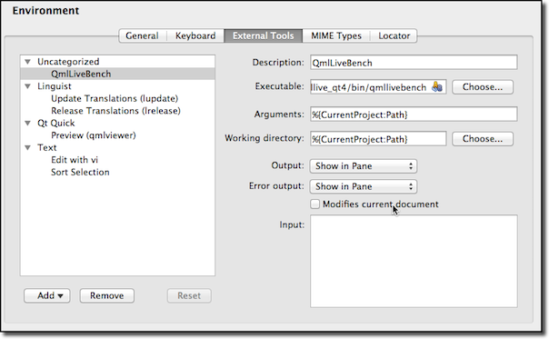
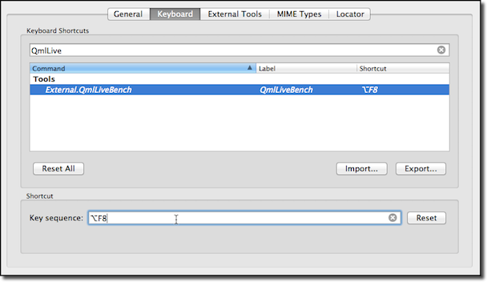
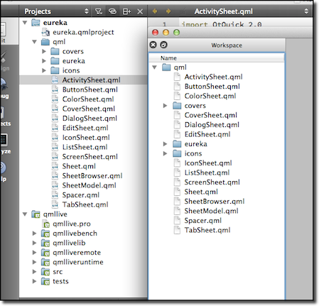

Usage
\chapterIntroduction
The QmlLive system was designed from the ground up to support your needs. It is structured in a modular fashion to be able to meet various usage requirements.
In the early phase of a project you normally want to use QmlLive Bench, which has everything included in a typical desktop application.
Later in the project you may want to test your UI code on a device. For this we have designed the QmlLive Bench in combination with the QmlLive Runtime. This combi pack offers you a default QML renderer to be run on the device and a small remote application on the desktop to control it.
For C++ developers, we also offer the ability to integrate the QmlLive system into your own custom runtime using our LiveNodeEngine class with a few lines of code and then use the QmlLive Bench to control it.
\chapterThe Workbench
The standard workbench is the all inclusive QML live reloading tool. It allows you to select a workspace to watch over and provides a default QML runtime for the active selected QML document.

You launch it by just executing the qmllivebench executable
$(QMLIVEPROJECT)/bin/qmllivebench[.exe]
The QmlLive Bench can also be passed a few command line arguments
Usage qmllivebench [options] <workspace> Usage qmllivebench [options] <workspace/file.qml> options: -pluginpath ........................path to QmlLive plugins -importpath ........................path to the QML import path -stayontop .........................keep viewer window on top
\chapterQt Creator Integration
You can integrate the QmlLive Bench into Qt Creator as an external tool. For this you need to open the Settings/Options dialog from Qt Creator and open the Environment group. There you will find the External Tools tab.
Under Executable enter the path to your QmlLive Bench executable.

Now QmlLive Bench is availabe under the menu entry Tool > External > QmlLive Bench. To be able to easier launch QmlLive Bench you can also assign a shortcut to the tool.

Now when you press Alt-F8 QmlLive Bench will be launched with the current project root folder open as workspace.

\chapterQmlLive Runtime
A default runtime is provided by the QmlLive Runtime tool. It provides a default qml viewer and listens on a given port for IPC calls from the remote. As such it's ideal to start developing on a target device, when no extra c++ code is required.

Calling the runtime
$(QMLIVEPROJECT)/bin/qmlliveruntime[.exe]
Usage of the runtime
Usage qmlliveruntime [options] <workspace> options: -ipcport <port> ....................the port the IPC shall listen on -updates-as-overlay ................allow receiving updates with read only workspace -update-on-connect .................update all workspace documents initially (blocking) -pluginpath ........................path to QmlLive plugins -importpath ........................path to the QML import path -fullscreen ........................shows in fullscreen mode -transparent .......................Make the window transparent -frameless .........................run with no window frame -stayontop .........................keep viewer window on top
Not all projects are designed so that they allow working on isolated panels or screens and it may be necessary to deploy whole project to a target device in order to execute it. Receiving updates normally requires write access to the deployed files. Depending on the target platform, the project may be deployed to a location which is not user writable. In most cases hacking on the file permissions after deployment can help, but a more convenient method is available - let QmlLive Runtime store all updates in a writable workspace overlay. Use the -updates-as-overlay option to enable this feature.
Another constraints may exist on updating documents later after application startup. If this is the case the -update-on-connect option can help - when this is used all workspace documents will be updated prior to instantiation of any QML component.
\chapterCustom Runtime
You can create your own custom runtime with the QmlLive features. This allows you to use your QML view setup with your additional C++ code together with the QmlLive system.
For this you need to use the LiveNodeEngine class to be able to receive workspace changes and active document updates. By default, the IPC will listen on the port 10234.
Here is a short example of a minimal custom QmlLive runtime:
#include <QtGui> #include <QtQuick> // Use QmlLive headers #include "livenodeengine.h" #include "remotereceiver.h" class MyQmlApplicationEngine : public QQmlApplicationEngine { Q_OBJECT public: MyQmlApplicationEngine(const QString &mainQml); // Perform some setup here QString mainQml() const; QQuickWindow *mainWindow(); QList<QQmlError> warnings() const; // ... }; int main(int argc, char **argv) { QGuiApplication app(argc, argv); MyQmlApplicationEngine engine(QStringLiteral("qml/window.qml")); if (!qEnvironmentVariableIsSet("MY_APP_ENABLE_QMLLIVE")) return app.exec(); #if defined(QT_NO_DEBUG) qWarning() << "QmlLive support was disabled at compile time"; #else LiveNodeEngine node; // Let QmlLive know your runtime node.setQmlEngine(&engine); // Allow it to display QML components with non-QQuickWindow root object QQuickView fallbackView(&engine, 0); node.setFallbackView(&fallbackView); // Tell it where file updates should be stored relative to node.setWorkspace(app.applicationDirPath(), LiveNodeEngine::AllowUpdates | LiveNodeEngine::UpdatesAsOverlay); // Listen to IPC call from remote QmlLive Bench RemoteReceiver receiver; receiver.registerNode(&node); receiver.listen(10234); // Advanced use: let it know the initially loaded QML component (do this // only after registering to receiver!) node.usePreloadedDocument(engine.mainQml(), engine.mainWindow(), engine.warnings()); #endif return app.exec(); }
On platforms where pkg-config is supported simply add the following to your project file if QmlLive is installed on your build host:
CONFIG += link_pkgconfig PKGCONFIG += qmllive
Another option is to compile everything directly into your application by including $(QMLLIVEPROJECT)/src/src.pri in your project file.